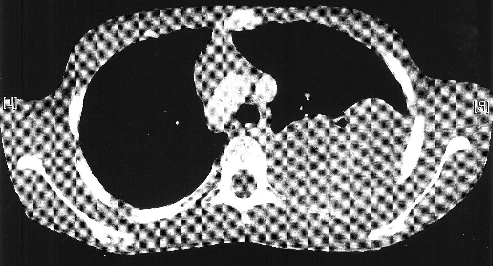
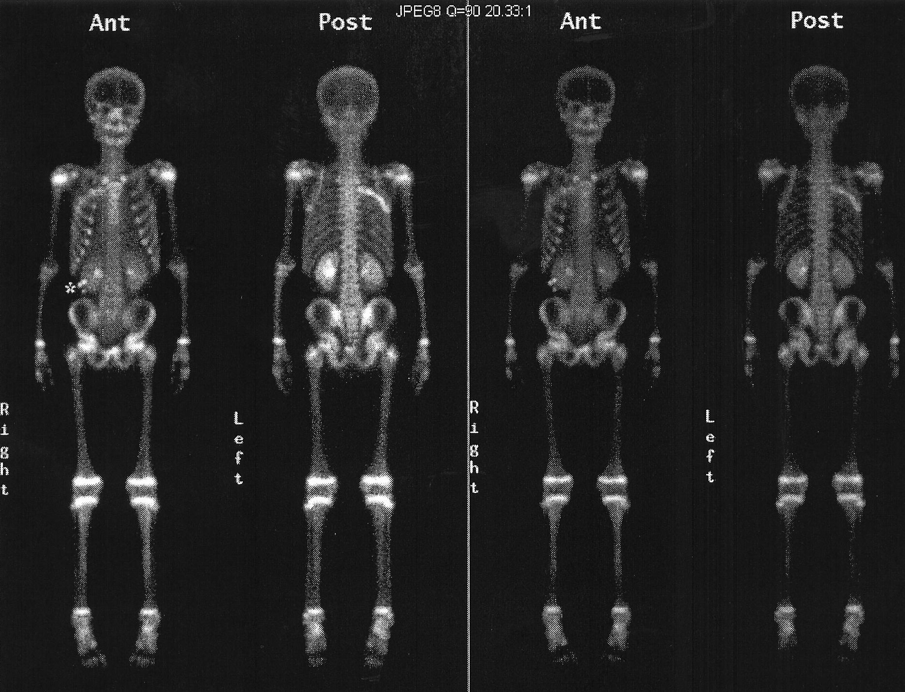
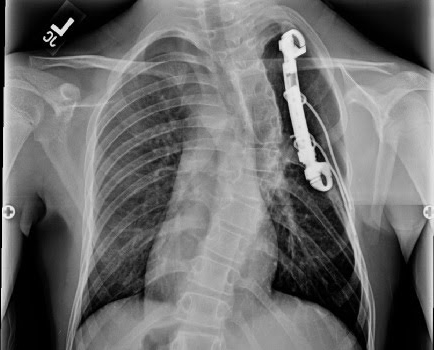

Histories

Here is some of my history, chronologically.
Cancer
Diagnosis
{kind=link}
On June 25th 2007 I was diagnosed with Ewing's Sarcoma. This is a rare form of bone cancer typically only found in 10-20 year olds. This image is mirrored to reflect that the tumor was on the right side. You can click on any of the images for full images of the X-ray/Bone scan/CAT scan.
Treatment
{kind=link}
For the next 4 months I was treated with # individual rounds of chemotherapy I was brought in for surgery to remove the tumor. This surgery removed 3 of my ribs, 4-6, from spine to armpit. These were replaced with a VEPTR, Vertical, Extensible, Prosthetic, Titanium, Rib. This prosthetic is clamped onto ribs 3 and 7 spanning the vertical gap. It also has titainum wires wrapped around and inserted into the remaining rib sections to emulate the ribs. Additionally a section of Gortex was added to strengthen the chest wall. Following this surgery I had another # chemotherapy treatments bringing the total up to 14 to total rounds. On March 1st 2008 I finished my last chemo treatment.
Post-Treatment
{kind=link}
My life after treatment has been affected somewhat by physical problems with my prosthetics and generally missing multiple ribs. One of the things I did very quickly was break all of the wires in my back. Some of these segments were removed due to them painfully poking me. They have since stopped using wires with this style of reconstruction.
Scoliosis
{kind=link}
In freshman year of high school I was diagnosed with scoliosis, excessive spine curvature. I had approximately a (DEGREE) bend in my spine. The fix for this is a spinal fusion This is where metal rods are attached to the spine, and bone is packed into the surrounding area of the main vertebrae to allow the spine to grow its self into one chunk rather than individual articulating parts. Mine was from vertebrae ### - ###, this distance is relatively stiff in even "normal" people so this hasn't affected my range of motion to much.
Sharp Synaptics
During the summer of 2015 between High School and College I and four other students formed a company, Sharp Synaptics, which had the goal of making apps to help people with Aphasia, a mental condition common after strokes. We started with an app that would help to speak for them. This was a great learning experience in a large number of ways and I would recommend it to anyone who is interesting in working with code. We all learned how to use version control, Git, work with each other over Slack, use a Kanban, and actually make apps.
Quality, Stamping, & Machining
This was my first "Real job" if you will, I had previous positions as an intern at the Tacoma Public Library, and an office assistant a friends company for a few months. While I was there I was responsible for data management. This meant that I got the data: 3d models, drawings, parts lists, and other information needed to make parts for our clients. This had a variety of requirements and a particular process that was relatively consistent. This meant that I could automate the task quite readily using AutoHotKey. After making my tools I could download new data and convert it at about 4 times the speed as I could without and for data that wasn't new but needed to be downloaded and save none the less moved from being 1.5 per minute to about 6 per minute of unique files, and 40 per minute of duplicate files. My tool also made far fewer mistakes than I would due to the inability for my tool to misspell file names or locations. My tool helped me get through over 30,000 files in 6 weeks brining the back log down to zero.
University Sportsman's Club
(University of Washington Tacoma club)
In the winter 2019 quarter while I was at UWT I wanted to start a gun club. After a few weeks of recruiting and paper work I started an RSO, Registered Student Organization, and we have held meetings throughout the Spring 2019 quarter. I have been the President of the club since inception and I plan to be until I graduate at the end of Spring 2020. My goals with this club were to get people who like firearms in any capacity to come and meet ever few weeks and have a range day every month so that fellow students at UWT have an opportunity to learn about guns in a controlled environment.
Arrow Electronics
During the summer between Junior and Senior years of school at the University of Washington Tacoma I worked at Arrow Electronics in Denver CO, for a summer IT internship. I mostly did Business intelligence dashboards. This means that I needed to make shiny, fancy, flashy pages for people to interpret data about Arrow that is not mine to share. To do this I used QlikSense and PowerBI. Each of these have their own quirks and helped me to use my "Excel" function knowledge and learn more of them. In additions to my regular job there all of the interns were put into groups and were tasked with a different task that is Arrow only info, though I can say that my team came in ## of ## teams.